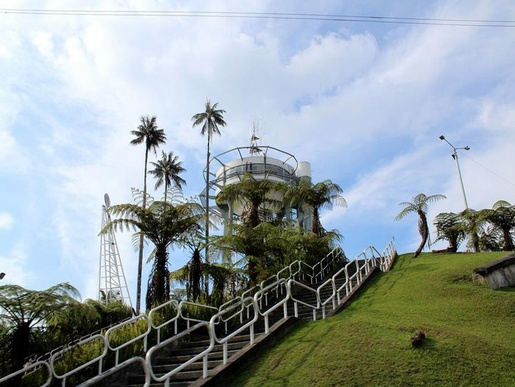

<div class="col-md-8" align ="justify">     
    

     


<p>Zona mirador de Manizales de gran actividad turística, donde los visitantes pueden disfrutar de una maravillosa vista y momentos de esparcimiento y diversión para todas las edades.
<br>
Desde el mirador de Chipre se puede tener una excelente panorámica de la ciudad, de la cordillera y de los nevados del Ruiz y Santa Isabel, también los valles de los ríos Cauca y Risaralda.
<br>
Bares, discotecas, restaurantes, monumento histórico, mirador libre, mirador panorámico y zonas al aire libre.
<br>
La Torre Panorámica o Torre al Cielo, es un lugar único abierto al público todos los días de 9:00 a 5:00 p.m. Por un valor bajo se puede acceder a la torre del mirador turístico y por un valor adicional puede ingresar cuantas veces desee durante el día. Además encontrará las siguientes actividades:
<br>
Columpio extremo y caminata al aire libre a una altura de 30 metros,
Juegos mecánicos e interactivos para niños y adultos,
Servicio de bar, cafetería y restaurante.<br>
El barrio Chipre es uno de los mas tradicionales de la cuidad de Manizales, donde durante el día se puede disfrutar de un recorrido tranquilo por la zona mirador y  saborear obleas, helados, cholaos y algodón de azúcar. Ya entrando la noche se prenden las discotecas y los bares donde jóvenes y adultos se divierten bajo un ambiente sano y cordial.
<br>
Visita Manizales, visita Chipre, la muy bien apodada por el poeta chileno Pablo Neruda como «una fábrica de atardeceres».
</p> 
</div> 
